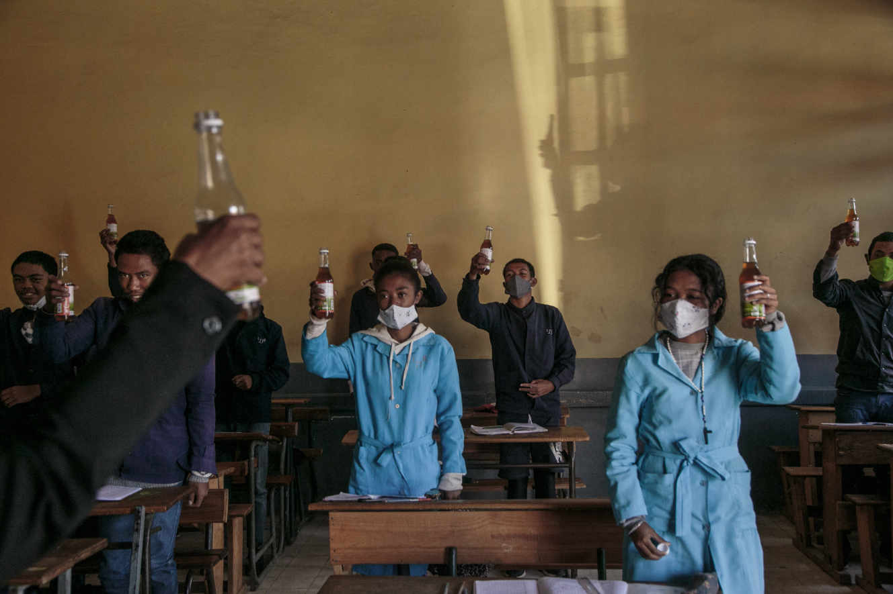

Vue d'ensemble des cas
Madagascar
Nombre total de cas
17 587
+ 0Guérisons
16 992
+ 0Décès
259
+ 0Monde entier
Nombre total de cas
73 476 721
+ 496 156Guérisons
41 616 042
Décès
1 635 464
+ 8 443Conseils au grand public
Protégez-vous et protégez les autres de la COVID-19
Si la COVID-19 se propage dans votre communauté, protégez-vous en prenant quelques précautions simples, comme maintenir une distance physique avec autrui, porter un masque, bien ventiler les pièces, éviter les rassemblements, vous laver les mains, et tousser dans votre coude replié ou un mouchoir. Suivez les recommandations locales là où vous vivez et travaillez. Faites tout cela !
Que faire pour vous protéger et protéger les autres de la COVID-19
- Laissez une distance d’au moins un mètre entre vous et les autres pour réduire le risque d'infection lorsque vous toussez, éternuez ou parlez. Gardez une distance encore plus grande entre vous et les autres lorsque vous êtes à l'intérieur. Plus vous êtes éloigné, mieux c'est.
- Considérez le port du masque comme normal lorsque vous êtes avec d'autres personnes. Pour que les masques soient aussi efficaces que possible, il est essentiel de les porter, de les ranger et de les laver ou de les jeter correctement.
- Lavez-vous les mains avant de mettre votre masque, ainsi qu'avant de l’enlever et après l'avoir fait.
- Assurez-vous qu'il couvre à la fois votre nez, votre bouche et votre menton.
- Lorsque vous enlevez votre masque, placez-le dans un sac en plastique propre et lavez-le, chaque jour, s’il s’agit d’un masque en tissu ou jetez-le dans un poubelle si c’est un masque médical.
- N’utilisez pas de masques avec des valves d’expiration.
Comment rendre votre environnement plus sûr
- Évitez les espaces clos, très fréquentés, où vous serez en contact étroit avec d'autres personnes.
- Si vous retrouvez d'autres personnes, faites-le à l'extérieur.
- Si vous retrouvez d'autres personnes, faites-le à l'extérieur.
N’oubliez pas les principes de base d’une bonne hygiène
- Lavez-vous les mains régulièrement et soigneusement avec une solution hydroalcoolique ou à l’eau et au savon.
- Évitez de vous toucher les yeux, le nez et la bouche.
- En cas de toux ou d’éternuement, couvrez-vous la bouche et le nez avec le pli du coude ou avec un mouchoir.
- Nettoyez et désinfectez les surfaces fréquemment, en particulier celles qui sont régulièrement touchées
Restez chez vous si vous ne vous sentez pas bien
- Apprenez à connaître tout l’éventail des symptômes de la COVID-19.
- Restez chez vous et isolez-vous si vous avez des symptômes mineurs tels que la toux, des maux de tête, une légère fièvre..
- En cas de fièvre, de toux et de difficulté à respirer, demandez immédiatement l'avis d'un médecin.
Les pharmacies de garde
vous pouvez à tout moment contacter l'une des ces pharmacies pour obtenir des medicaments de premier secour.
Pharmacie d'Anosizato
Ouvert 24h/24Pharmacie de la Pergola
Ouvert 24h/24Pharmacie Ny Aina
Ouvert 24h/24Pharmacie Métropole
Ouvert ⋅ Ferme à 18:00Pharmacie Hanitra
Ouvert ⋅ Ferme à 18:00Les différents centre de traitement
CCO IVATO
Outre ces nouveaux centres de traitement du COVID-19, le CHU Anosiala, l’hôpital Manarapenitra d’Andohatapenaka ainsi que le Centre Médical Covid-19 du Village Voara Andohatapenaka
ETSY MAHAMASINA
CENTRE DE TRAITEMENT COVID-19
HJRA : HOPITAL JOSEPH RAVOAHANGY
contact hopital, clinique, matérnité à antananarivo, madagascar
Centre Hospitalier Universitaire Joseph Raseta Befelatanana
Le Centre Hospitalier Universitaire Joseph Raseta Befelatanana connu comme l’hopital Befelatanana est l’un des principaux établissements hospitaliers d’Antananarivo
Quelques Actualités
27 juillet 2020
Une capacité d’accueil d’environ 250 patients Pour faire face à la propagation du nouveau coronavirus, notamment dans la capitale Antananarivo, qui est l’un des foyers actuels du virus dans le pays, un nouveau centre de traitement Covid-19 (CTC) vient d’être inauguré.

16 décembre 2020
Madagascar, qui avait jusqu’au 7 décembre pour s’inscrire sur la liste des pays bénéficiaires, a préféré passer son tour.
Le gouvernement se montre sceptique à l’égard de la vaccination, préférant pour l’instant mettre en avant un remède traditionnel dont l’efficacité n’a pas été prouvée.
11 décembre 20202
Alors que la plupart des pays en Afrique essaient de s’assurer les doses de vaccins nécessaires contre la Covid-19, Madagascar ne semble pas être emballée. Le pays ne veut pas participer au programme de vaccination l’OMS.
14 juillet 20202
En un mois, les chiffres de contamination au nouveau coronavirus et de décès ont quasiment été multipliés par quatre.